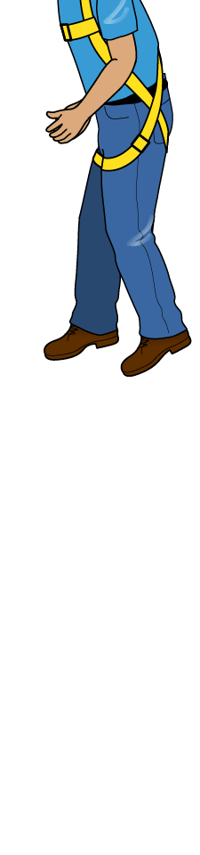

Oregon OSHA’s fall distance educator
How far can you fall with a shock-absorbing lanyard? Oregon OSHA’s fall distance educator shows you how to calculate your fall distance and your free fall distance with three different scenarios. To keep things simple, the educator assumes:
- You are a six-foot male who weighs 200 pounds
- You are using a six-foot shock-absorbing lanyard with an internal 3.5-foot shock absorber
- The height from your working surface to your back D-ring is 5 feet
- Your shock absorber will be fully deployed after you fall
While the scenarios may not represent real-world situations, they will help you understand how far you could fall when you really are using a shock-absorbing lanyard.
